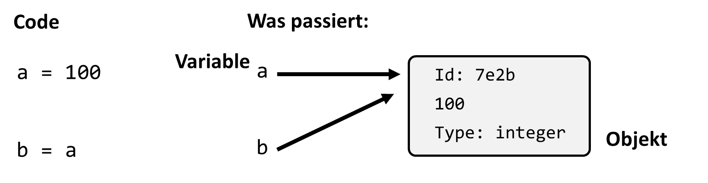
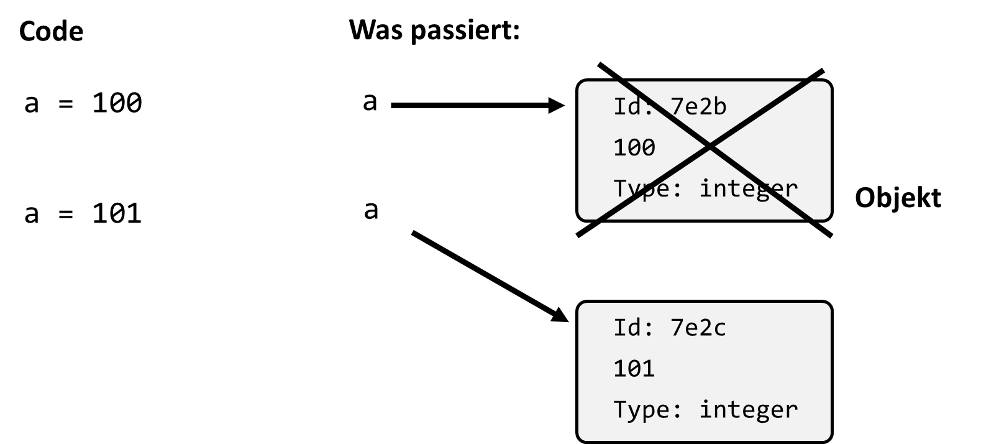

3. Kontrollstrukturen und Bedingungen#
3.1. Skripte/Programme#
Letztes Mal haben wir uns v.a. kurze Befehle angeschaut, die wir entweder in der Konsole (Terminal/Shell) oder über eine integrierte Entwicklungsumgebung (IDE) wie z.B. Spyder eingegeben werden.
Im IDE hatten wir aber auch bereits gesehen, dass man mehrere solche Befehle untereinander schreiben kann und diese dann zusammen ausgeführt werden. Ein erstes Skript. Oder Programm? Was genau eigentlich?
Die Begriffe werden verschieden benutzt. In dieser Veranstaltung werde ich im allgemeinen nicht wirklich unterscheiden zwischen Skript und Programm. Der Begriff Skript ist dabei etwas eingeschränkter, man würde z.B. eine vollständig entwickelte Software nicht als Skript bezeichnen.
Programm \(\approx\) Skript (und Programm > Skript)
Dies ist nur ein kleines Skript
fruit = ["apple", "orange", "banana", "pear"]
juice_choice = 1
ice_choice = 2
print(fruit[juice_choice] + " juice") # oder: print(f"{fruit[juice_choice]} juice")
print(fruit[ice_choice] + " ice cream")
Mini Quiz
Was gibt dieses Skript aus?
apple juice, orange ice cream
orange juice, banana ice cream
banana juice, orange ice cream
Keine Ahnung! Ich müsste raten (will aber nicht)
Mhh. Ziemlich langweiliges Programm. Was braucht man häufig um interessantere Dinge umzusetzen?
Zum einen: Input
Dazu kommen wir aber im Detail etwas später.
Für den Anfang nur eine einfache Input-art von Python, die Funktion input().
my_str = input("String-Eingabe: ")
print(my_str) # => gibt den eingegebenen String aus
Damit können wir das fruit-Beispiel etwas umbauen:
fruit = ["apple", "orange", "banana", "pear"]
print(f"We have: {fruit}")
fruit_choice = input("Please enter your choice: ")
print(f"Here is your {fruit_choice} ice cream!")
Mini Quiz:
Aber was passiert wenn ich „Ketchup“ eingebe?
a) Here is your Ketchup ice cream!
b) ValueError
c) We have no Ketchup ice cream!
Das führt uns direkt zur Frage:
Wie überprüfen wir ob es unsere Wahl überhaupt gibt?
Bei den Sequenzen hatten wir schon kurz die Abfrage xxx in my_list
Das ist bereits eine Bedingung und die werden in Python auf verschiedene Arten abgefragt:
3.2. Bedingungen#
In vielen Programmen wollen wir Entscheidungen treffen was als nächstes geschieht. Das wird v.a. über das Abfragen von Bedingungen gemacht. Im Prinzip ist dies nichts anderes als eine einfache Frage die eindeutig mit wahr (True) oder falsch (False) beantwortet werden kann.
9 < 10 # => True
print(3 < 4 < 5) # => True
print(4.0 == 4) # => True
print(4.01 == 4) # => False
"apple" < "banana" # => True (durch die Reihenfolge im Alphabet sagt Python: a < b)
"apple" != "pear" # => True
3.2.1. Kleiner Exkurs: is und == bedeuten verschiedene Dinge!#
Vorsicht mit dem is. Dem normalen Sprachgebrauch nach scheint es völlig Sinn zu machen wenn wir is und == wie Synonyme verwenden. Beim Programmieren (in Python zumindest) bedeuten die beiden Operatoren aber verschiedene Dinge:
a = 12345678
b = 12345678
print(a == b) # => True
Das ist natürlich keine große Überraschung. Möglicherweise aber doch, das is nicht das gleiche Ergebnis liefert:
print(a is b) # => False
3.2.2. Nochmal zurück zu den Variablen#
Wir hatten schon gesehen, dass Variablen Zuweisungen zu Werten irgendwo im Speicher sind.
is bezieht sich in Python auf eine Abfrage die darauf zielt zu sehen ob es sich um ein und Dasselbe Objekt handelt. Genauer eigentlich, ob zwei Objekte gleich sind und an der selben Speicheradresse hinterlegt sind.
Dies kann auch über id() (von identity) ausgegeben werden:
print(id(a))
print(id(b))
print(id(a) != id(b)) # => True

In der Praxis werden wir aber nur sehr selten mit is Abfragen in diesem Kontext zu tun haben. Doch zu verstehen was „hinter der Bühne“ abläuft hilft auch bei einer anderen noch viel wichtigeren Unterscheidung die wir in Python berücksichtigen müssen. In Python unterscheiden wir Datentypen nach veränderbar (mutable) und unveränderbar (immutable).
Veränderbare Datentypen erlauben es, dass deren Werte dynamisch verändert werden können. Zu dieser Kategorie zählen Listen, Sets (kommen später) und Dictionaries (kommen später).
Unveränderbare Datentypen erlaben es nicht, dass die Werte nachträglich geändert werden. Dazu zählen Zahlen (int, float), Boolean, String und Tuples.
Beispiel:
fruits = ["apple", "banana", "mango"]
print(fruits[-1]) # -> mango
# Beim Datentyp list können wir Elemente verändern:
fruits[-1] = "orange"
print(fruits[-1]) # -> orange
# Beim Datentyp Tuple geht das nicht
fruits = ("apple", "banana", "mango")
print(fruits[-1]) # -> mango
fruit[-1] = "orange" # -> TypeError
Natürlich können wir aber auch Variablen mit unveränderbaren Datentypen beliebig neu zuweisen. Dabei wird aber immer auch ein neues Objekt im Speicher erzeugt.
3.2.3. Optional*: lazy Python…#
* Optional heisst auch immer, „nicht Prüfungsrelevant“
Bei „kleinen“ Objekten kann es allerdings passieren, dass diese doch die gleiche „identity“ bekommen. Das macht es leider noch unübersichtlicher:
a = "looks like the same string"
b = "looks like the same string"
print(a is b) # => True or False (depends on where it is run...)
a = 5
b = 5
a is b # => True
aber:
a = 30019
b = 30019
a is b # => False !?! Also besser nicht so benutzen...
3.2.4. Wichtig zum Thema is vs == is v.a.:#
Alle Datentypen ausser Zahlen, Strings, Bool und None erzeugen neue Objekte
isbenutzen um nach identischen Objekten zu fragen==benutzen um nach gleichem „Inhalt“ zu fragen Beispiele wofür es gedacht ist:
a = [1, 2]
b = [1, 2]
print(a is b) # => False
oder:
a = [1, 2, 3, 4]
b = a
print(a is b) # => True
b[0] = 77
print(a) # => [77, 2, 3, 4]
Wie gesagt, Wir hatten auch letztes Mal schon eine Bedingung bei den Sequenzen
2 in [1, 2, 3, 4, 5] # => True
2 not in [1, 2, 3, 4, 5] # => False
"z" not in "Ein String ohne kleines Z" # => True
3.2.5. Logische Bedingungen and, or#
Hier geht es nicht darum was wir im Alltag als „logisch“ bezeichnen, sondern um klassische Logik, und da gilt:
True and False # => False
True or False # => True
Hier mal ein Beispiel:
a = 4
a < 0 or a > 3 # => True
Besser lesbar wird es manchmal durch Klammern.
a = 4
(a < 0) or (a > 3) # => True
Logische Ausdrücke, etwa mit or können auch zu längeren Abfragen kombiniert werden:
s = "ja"
(s == "Ja") or (s == "JA") or (s == "ja") # => True
Vorsicht: Logik-Abfragen können schnell kompliziert werden!
3.2.6. Bedingte Anweisungen (if, if-else)#
Wofür jetzt das Ganze? Was ist so toll an den Bedingungen? Konditionen und logische Abfragen sind essentiell wenn es um Programmflüsse geht. Konkret geht es hier um sogenannte „bedingte Anweisungen“.
number = 0.01
if number >= 0:
print(f"{number} ist positiv.")
Als Beispiel können wir nun das Früchte-Skript von vorhin noch einmal überarbeiten.
fruit = ["apple", "mango", "banana", "pear"]
print(f"We have: {fruit}")
fruit_choice = input("Please enter your choice: ")
if fruit_choice in fruit:
print(f"Here is your {fruit_choice} ice cream!")
else:
print(f"{fruit_choice}? We don't have it.")
Wichtig: In Python wird mit Einrückungen gearbeitet! Andere Sprachen nutzen dafür oft Klammern. Die Art der Einrückungen kann im Prinzip frei gewählt werden, sie muss nur Konsistent sein. Meistens werden als Standard aber 4 Leerzeichen gewählt.
Weitere Ergänzung des Skripts: Was passiert z.B. mit Mango
fruit = ["apple", "mango", "banana", "pear"]
print(f"We have: {fruit}")
fruit_choice = input("Please enter your choice: ")
if fruit_choice == "mango":
print("Oh, I just see that we are out of mango!")
elif fruit_choice in fruit:
print(f"Here is your {fruit_choice} ice cream!")
else:
print(f"{fruit_choice}? We don't have it.")
Was wir an dem Beispiel gesehen haben waren also neben if ...Bedingung... :auch if-else:
number = 0.01
if number >= 0:
print(f"{number} ist eine positive Zahl.")
else:
print(f"{number} ist eine negative Zahl.")
Und if-elif-else:
number = 0.01
if number > 0:
print(f"{number} ist eine positive Zahl.")
elif number < 0:
print(f"{number} ist eine negative Zahl.")
else:
print(f"{number} müsste 0 sein?")
Damit kann man ewig lange Abfragen bauen, zum Beispiel sowas:
angebot = float(input("Dein Angebot: "))
if angebot <= 0:
print("Richtig witzig, danke.")
elif angebot < 10:
print("Lächerlich!")
elif angebot < 20:
print("Nein, lieber nicht.")
elif angebot < 25:
print("Das kommt schon in die Nähe...")
elif angebot < 30:
print("Mmhhh. OK. Weil du's bist.")
elif angebot < 40:
print("Ok. Deal.")
elif angebot < 100:
print("Deal. Eine Freude mit dir Geschäfte zu machen.")
else:
print("Moment... irgendwas stimmt hier nicht...")
3.3. Schleifen (loops)#
3.3.1. While-Schleife (while loop)#
while loops (Schleifen) laufen solange ein bestimmter Wert, oder eine Bedingung, wahr bleibt (True). In Python sieht deren Codestruktur aus wie folgt:
while True:
# do something
# Code here is only executed after the while loop
Ein kleines Beispiel:
x = 2
while x < 1000:
x = x**2
print(x)
Anderer Startwert:
x = 1.0000002
while x < 1000:
x = x**2
print(x)
Vorsicht: While loops können auch endlos laufen! => Mit Ctrl+C kommt ihr da aber wieder raus :)
x = 0.9
while x < 1000:
x = x**2
# print(x)
Ein while Loop lässt sich auch mit else kombinieren:
x = 2
while x < 100:
x = x + 2 * x
print(x)
else:
print("Fertsch!")
Das ist aber (in diesem Fall) vom Ablauf des Programmes her nichts anderes als folgendes:
x = 2
while x < 100:
x = x + 2 * x
print(x)
print("Fertsch!")
3.3.1.1. break!#
Wie wir schon gesehen haben können while-Schleifen auch endlos laufen (was eigentlich nie gewünscht ist). Denn die while-Schleife läuft solange die angegebene Bedingung True ist. Sobald die Bedingung False wird hört die Schleife auf.
Es gibt aber noch eine zweite Möglichkeit eine while-Schleife zu beenden und zwar mit break
x = 5
dx = 0.9
while x < 100:
x = x * dx
print(x)
if x < 0.5:
print("x is too small")
break
3.3.2. For loops (For Schleifen)#
In der Praxis werden in Python sogenannte „for loops“ deutlich häufiger als „while loops“ genutzt. Vom Prinzip her sieht das Ganze so aus.
for expression in iterable:
# code
else:
# some other code
Wir lassen den else Teil erstmal weg.
Im Klartext macht ein for loop das Folgende. Der Loop läuft einmal durch alle Elemente aus iterable. Ein Beispiel:
for antwort in ["ja", "nee", "vielleicht", "weiss nicht"]:
print(f"Ich sag mal...{antwort}")
Das Funktioniert mit jeder Python Sequenz auf diese Art:
for char in "That's a string and full of letters.":
print(char)
for x in [0, 2, 19, 3]:
print(x + 1)
3.3.3. Best friends: range and for#
Oft möchten wir eine Programmteil n-mal laufen lassen. Dafür nutzt man in Python range. range ist ein „generator“, einen Funktionstyp den wir später noch genauer besprechen. An dieser Stelle reicht es zu wissen, dass es eine Funktion ist, die Werte erst ausgibt, wenn sie ausgelesen werden.
range generiert Integer ein einem gewünschten Intervall und Abstand
print(list(range(5))) # => [0, 1, 2, 3, 4]
print(list(range(4, 8))) # => [4, 5, 6, 7]
print(list(range(10, 30, 4))) # => [10, 14, 18, 22, 26]
Mini Quiz
Was gibt
list(range(-3, 3)aus?
a) [-3, 0, 3]
b) [-3, -2, -1, 0, 1, 2, 3]
c) [-3, -2, -1, 0, 1, 2]
OK, zurück zum eigentlichen Einsatz, dem for loop:
for i in range(5):
print(i)
Tada!
Falls die Zahl i innerhalb der Schleife nicht verwendet wird kann sie auch
weggelassen werden:
for _ in range(3):
print("Dreimal: Ja!")
Falls man einen Zähler und ein Element aus einer Sequenz benötigt, gibt es
die Alternative enumerate statt range:
fruits = ["apple", "mango", "banana", "pear"]
for i, fruit in enumerate(fruits):
print(f"{i + 1}. {fruit}")
3.3.4. Zwei weitere wichtige Optionen in Loops: break und continue#
break ermöglicht es aus Loops vorzeitig auszubrechen. Zum Beispiel hier:
for zeichen in "Ja genau. Dies ist ein string.":
if zeichen == ".":
print("Punkt gefunden!")
break
# Hier kommt man nur hin wenn break nicht ausgeführt wurde
print(zeichen)
print("Fertig.")
continue ist dagegen die Aufforderung den laufenden Zyklus des Loops
zu verlassen, aber dann mit dem Loop fortzufahren.
zahlen = [2, 3, 5, 9, 557, 1232, 233358]
for zahl in zahlen:
if zahl%3 != 0:
continue
# Hier kommt man nur hin wenn continue nicht ausgeführt wurde
print(f"{zahl} ist durch 3 teilbar!")
Beide Befehle (continue und break) können genauso auch in while Schleifen
eingesetzt werden.
3.3.5. List comprehension !#
In Python gibt es noch eine andere, sehr kompakte Art einen Loop zu bauen. Das ist die sogenannte „List comprehension“.
my_list = [1, 2, 10]
new_list = [x**2 for x in my_list]
print(new_list)
Als for loop wäre das ganze deutlich länger:
my_list = [1, 2, 10]
new_list = [] # leere Liste
for i in my_list:
new_list.append(i ** 2)
print(new_list)
Routinierte Python-Programmierer*Innen nutzten gerne und oft die list comprehension. Das verkürzt den Code eines Programmes oft deutlich. Allerdings sollte man darauf achten das weniger Code nicht automatisch besserer Code bedeutet! Vor allem bei komplizierteren, verschachtelten Beispielen sind list comprehensions oft sehr schwer zu lesen. D.h. auch wenn etwas „nur“ eine Zeile Code benötigt, es aber Minuten dauert um zu verstehen was dort geschieht, ist ein normaler for-loop vielleicht die bessere Wahl.
Mini Quiz!
Was gibt die folgende List comprehension aus?
`print([s[0] for s in [„eins“, „zwei“, „drei“]])
a) eins
b) eins, zwei, drei
c) e, z, d
d) 0, 0, 0